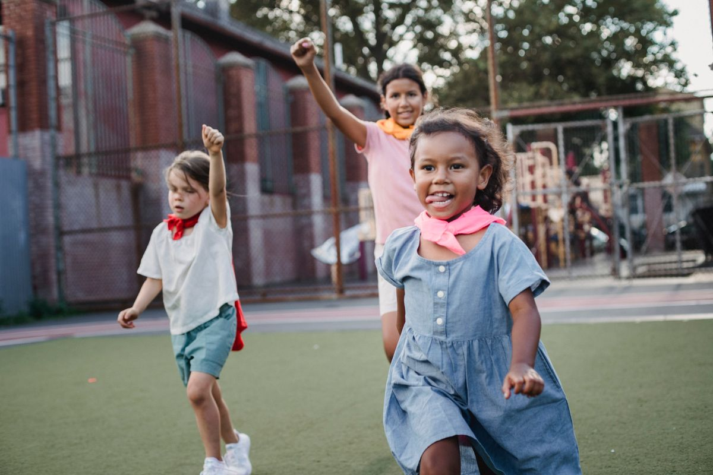

If mornings in your house feel like a relay race, you're in good company. The good news? A little planning turns "what should I wear?" into a five-second decision. Here are ten combos our own little ones reach for on repeat — soft, practical and almost impossible to get wrong.
1. The Classic Romper
One piece, zero guesswork. A stretchy cotton romper works for playdates, park runs and nap time alike. Bonus: fewer pieces to wrestle a wriggling toddler into.
2. Tee + Joggers
The unofficial uniform of childhood. Pair a bright tee with soft joggers and let them pick the color of the day — giving kids a choice cuts the argument count way down.
3. The Twirl-Ready Dress
For the small human who insists on twirling at breakfast. A smocked dress with built-in bloomers means twirls all day with no wardrobe mishaps.
"The secret isn't more clothes — it's more compatible clothes. Everything in their drawer goes with everything else."
4. Matching Set Energy
Sets take styling out of the equation completely. They look intentional, stay tidy and cut the "which top goes with these pants?" debate entirely.
5. Layer-Ready Cardigan
A soft cardigan over anything adds warmth without bulk. Easy on, easy off — perfect for that confusing in-between weather window.
6. The Sneaker Situation
Whatever they wear on top, finish with a pair they can run in. Velcro or elastic laces save you literal hours across a school year.
7. Pyjama-to-Play Transition
Choose sleepwear that doubles as loungewear. On slow weekends, staying in soft PJs until noon is basically a parenting win.
8. Pre-Made Outfit Hooks
Hang complete outfits together on one hanger — shirt, bottoms, socks. Kids can "shop" their own wardrobe and dress themselves with pride.
9. Weather-Ready Extras
Keep a light jacket, sun hat and spare socks in a bag by the door. Future-you will be very grateful.
10. Let Go of Perfect
Stripes with plaid? If they're happy and comfy, it's a win. Comfort first, trends second, joy always.

Happiness is the only dress code that matters.
Shop the Looks
Every piece below is from our everyday range — wash-and-wear friendly, sized for growing bodies and priced for growing families.